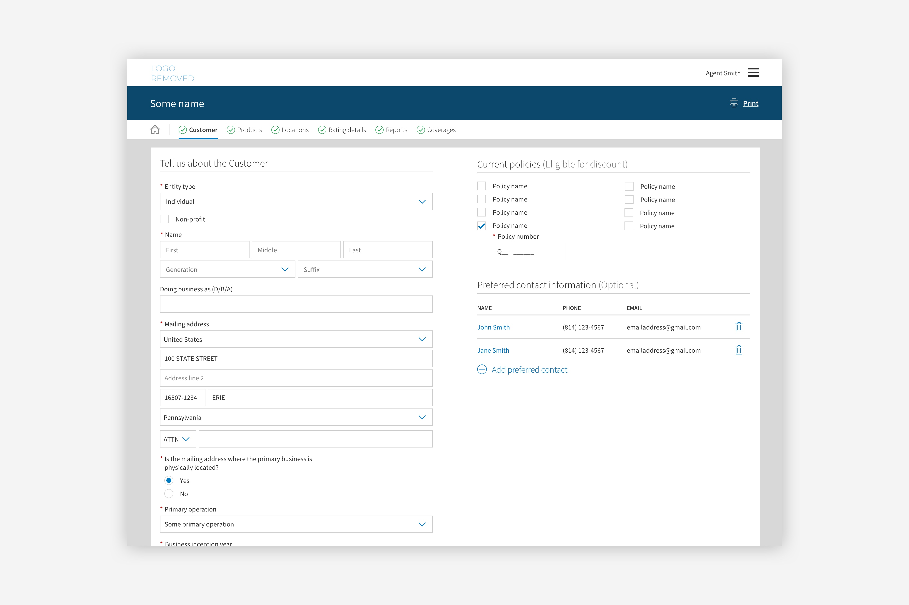

I am a User Experience Designer from Erie, Pennsylvania. With a BA in Graphic Design, I bring a strong background in visual design to my work, coupled with an aptitude and passion for front-end development. As a former college athlete, I possess strong skills in communication, teamwork, balance and leadership. I specialize in solving complex problems through simple, elegant design based on user research, analysis and testing.
view resumeMy work
Commercial Insurance Application
User research & analysis
UX Design
Usability testing

VinoShares
User research & analysis
UX Design
Front-end engineering
Product design & branding

Pattern Library
User research & analysis
UX Design
Front-end engineering

The Romantic Era
Product design & branding
Videography & video editing